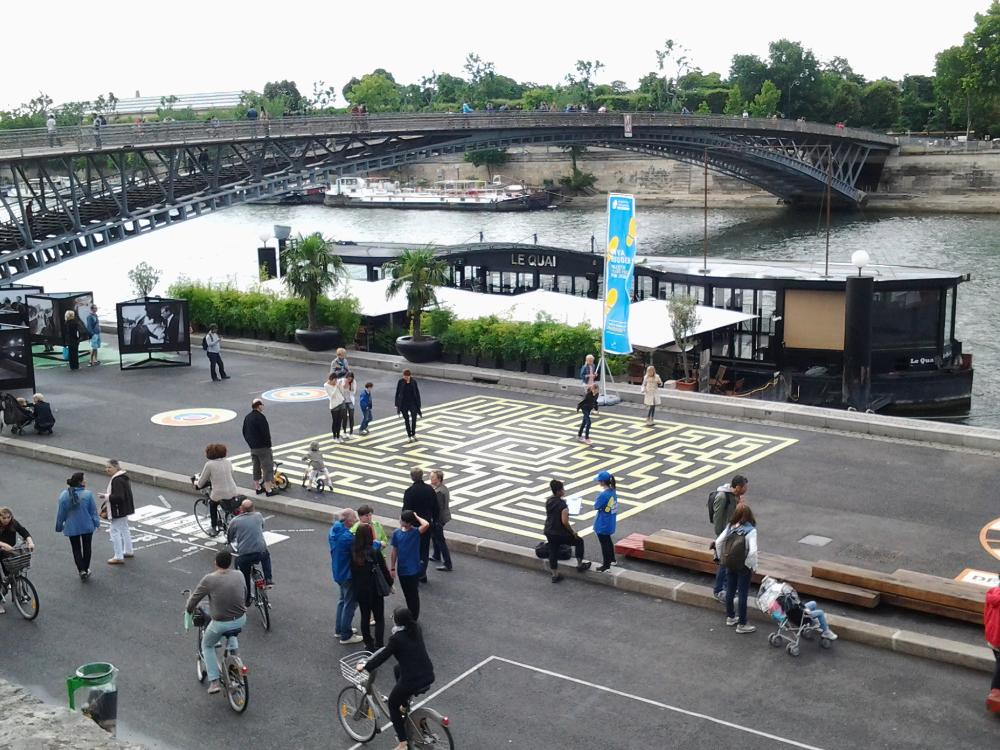

Париж. День четырнадцатый. Последний.
29.06.2014
- Нотр дам
- Разрядился фотик
- Мост замков
- Грустно оно так-то

29.06.2014

1. Горбун отверженный с проклятьем на челе...
2. Эсмеральда
1. Одного из дедов держит прикольный тип
2. Окна как из Муранского стекла
Тут как назло сел фотоаппарат, и поэтому за этот день немного фоток, так как доставать плашет и фоткать как-то ленивей, чем фотоаппартом. Так что отчет получился коротенький.
1. Зато походили по магазинам и понакупили всяких разных штук! Как же не пошопиться!
2. Я знал, что на этом мосту замки, но не в три ряда же!
1. На набережной Сены были танцы по квадратам - нужно под счет переходить на нужный квадрат.
2. Лабиринт с одним входом
1. Контробанда из-за границы. Это мы еще до дъюти фри не дошли.
2. Пришо время сбрить бороду путешественника! Ведь сегодня королевская ночь - последний день!
Даже захотелось прочитать это произведение, или посмотреть, или послушать - я про Нотр-Дам. Вот так с легкой руки писателя увековечен собор! Хотя в Париже достаточно красивых церквей и соборов, только в этот была очередь длинной полкилометра и это при свободном, бесплатном входе.
Ну что, завтра в самолет и в Питер!
{kind=link}
{kind=link}
{kind=link}
{kind=link}
{kind=link}
{kind=link}
{kind=link}
{kind=link}
{kind=link}